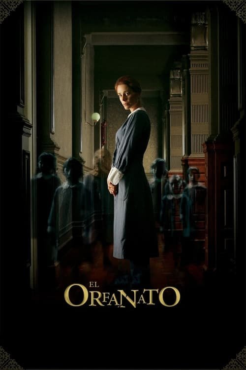

El orfanato (2007)
Sinopsis Rápida
En un orfanato aparentemente idílico, una madre descubre una terrible verdad que amenaza a su hijo y la sumerge en un espiral de horror sobrenatural y recuerdos ocultos.
Sinopsis Detallada
Laura regresa al orfanato de su infancia para abrir un hogar para niños discapacitados, pero la atmósfera inquietante del lugar y los juegos imaginativos de su hijo Simon despiertan una serie de eventos inexplicables. Lo que comienza como inquietantes visiones se transforma en una aterradora realidad cuando Laura se ve obligada a confrontar secretos del pasado, poniendo a prueba sus límites mentales y emocionales en una lucha desesperada por proteger a su familia. La película explora temas de culpa, pérdida y la delgada línea entre la realidad y la fantasía, dejando al espectador en vilo hasta el impactante desenlace.
¿Por qué tenés que verla?
- Una atmósfera tensa y llena de suspense que te mantendrá al borde de tu asiento.
- La magistral dirección de Juan Antonio Bayona crea una estética visual impactante y llena de simbolismo.
- Su impacto en el cine de terror español y su reconocimiento internacional la convierten en un clásico moderno.
- Excelente actuación del elenco principal, especialmente de la protagonista.
Idea Extra
Análisis del simbolismo en 'El Orfanato': una exploración de los elementos visuales y narrativos que construyen la atmósfera de terror y revelan las capas más profundas de la historia.